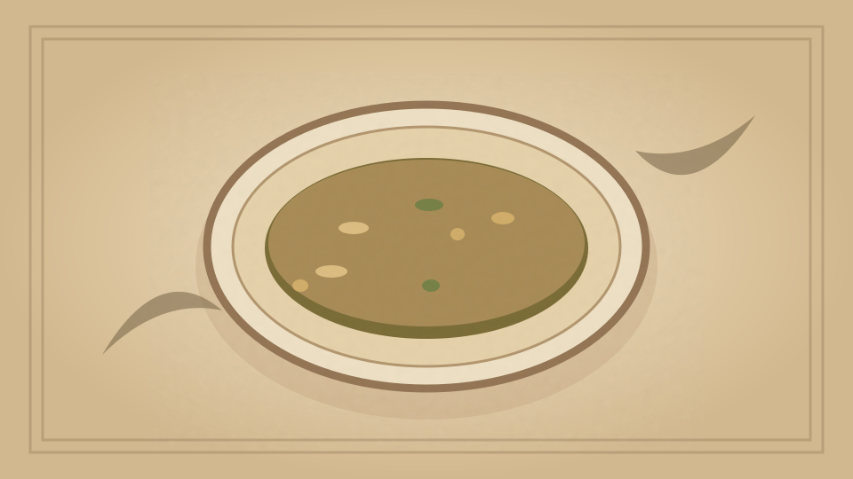

1910 · Fannie Merritt Farmer · SOUPS WITHOUT STOCK
Tapioca Wine Soup
The Boston Cooking-School Cook Book
❧ ───── ❦ ───── ❧

Historical Recipe
The following text is extracted from the 1910 edition, retaining historical terminology and quantities.
Original Ingredients & Directions
⅓ cup pearl tapioca
1 cup cold water
3 cups boiling water
½ teaspoon salt
3–inch piece stick cinnamon
1 pint claret wine
½ cup powdered sugar
Soak tapioca in cold water two hours. Drain, add to boiling water with salt and cinnamon; let boil three minutes, then cook in double boiler until tapioca is transparent. Cool, add wine and sugar. Serve very cold.
Automatically extracted transcription; editorial verification pending. Historical instructions may not meet modern food-safety standards.